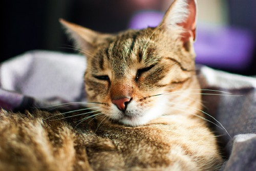

|
This is TomTom, and he's nearly full grown. We estimate he is
between 1 and 2 years old, but we're not entirely sure. TomTom is
Mr. Mellow, and seldom goes faster than a slow stroll--even when
he's hungry and it's dinner time. He likes cuddles and back
scratches, and has been known to fall asleep with his tongue
sticking out from too much purring. TomTom is also a natural born
kitten sitter, and will watch over little ones like they are his
own. He never gets impatient with the small fur babies, no matter
how much they chew on his tail or try to play wrestling match. Tom
is also a proud member of the empty dish club, and will never let
any food go to waste.
|

|
This is Miss Lily and she came to us from a local animal clinic.
Her owner was an elderly woman who passed away while Lily was
getting a boo boo stitched up. The vet wasn't able to find her a new
home when nobody came to claim her, so we made an exception to our
kittens-only rule. Miss Lily must sleep on her own pillow and does
not like to get her paws dirty. She primps and preens about 15 hours
a day. According to the vet, Lily is approximately 3 years old as of
August 2018. She gets along well with other cats and dogs, as long
they don't slobber on her. Miss Lily is not too fond of CrustyGurl
though, because she is just not down with that the down-n-dirty
crowd. She is also a very sneaky milk thief, and is known to get her
head stuck in tall glasses when she steals a few lickety licks.
|